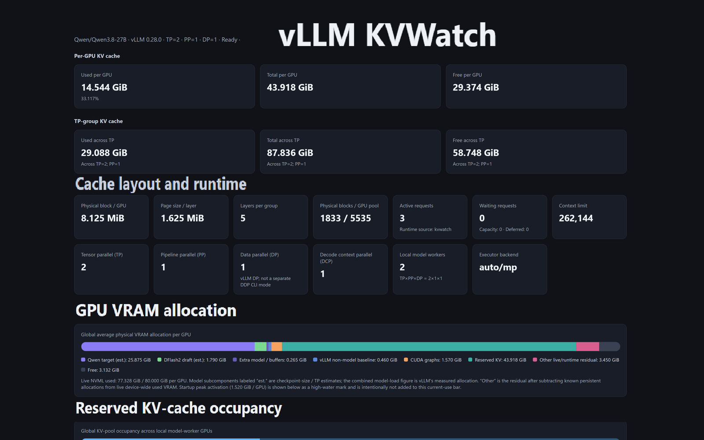
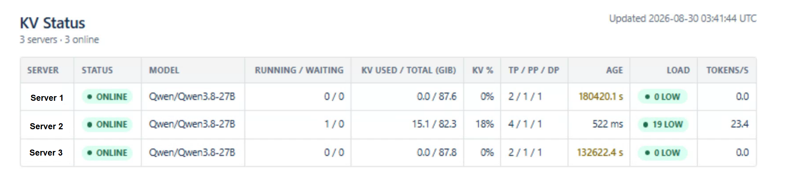

The visibility gap
GPU utilization and request counts don’t tell the whole story. Engineers needed to see which requests held KV-cache capacity and compare memory pressure, queues, and health across nodes.
LLM infrastructure / Observability
See what’s holding
your inference back.
I built KVWatch at Cerio to make LLM bottlenecks visible: from the KV cache held by individual requests to memory, queue pressure, and throughput across GPU servers.

Open full dashboardInside the serving engine
Connect memory pressure to the work behind it, with a single view of cache occupancy, runtime topology, and active requests.
01 / The short version
GPU utilization and request counts don’t tell the whole story. Engineers needed to see which requests held KV-cache capacity and compare memory pressure, queues, and health across nodes.
I built a vLLM scheduler plugin, a per-node dashboard, a Python fleet CLI, and a Confluence status view. Together, they connect internal serving state with live GPU and inference metrics.
A shared diagnostic view across three GPU nodes, from request-level cache accounting to fleet-wide health and throughput. Engineers can inspect the same system through a dashboard, terminal, or wiki.
02 / Under the hood
A read-only plugin captures physical cache pools, request context, and token counters.
vLLM V1 AsyncScheduler
Combine scheduler snapshots with GPU telemetry, serving metrics, and startup logs.
NVML + Prometheus
Poll nodes in parallel and maintain a cached fleet snapshot for shared access.
Python + HTTP endpoints
Expose health, capacity, and throughput in the dashboard, CLI, and wiki.
Web + terminal + Confluence
No vLLM fork: KVWatchScheduler subclasses the V1 AsyncScheduler through its plugin interface and delegates scheduling to vLLM. Immutable snapshots expose physical pools, hybrid cache groups, request-level block references, and parallelism through a read-only HTTP endpoint.
Example serving configuration: The documented deployment uses vLLM 0.28.0 with Qwen3.8-27B in bf16, prefix caching, DFlash2 speculative decoding, and a 262,144-token context limit. The dashboard reports the actual topology on each node.
Fleet collection: A zero-dependency Python CLI queries nodes in parallel. For the wiki view, a background collector maintains one cached snapshot; viewers read that cache instead of triggering additional requests to every inference node.
03 / Across the fleet
KVStatus · Embedded in Confluence

Open full fleet viewKVStatus brings health, running and queued requests, KV-cache capacity, and generated tokens per second into one compact table. A single collector serves the shared view without multiplying traffic to the inference servers.
Age is not automatically staleness: Idle engines can stop producing scheduler snapshots when there is no new request activity. KVStatus retains static layout data and reconciles dynamic usage and request counts against live vLLM metrics, while showing the snapshot’s age and source.
Load reflects the strongest pressure: The 0–100 score uses the greater of KV-cache pressure and request pressure. Queued work raises the score to at least 90. If required inputs are missing, the composite score is withheld.
04 / Engineering decisions
The plugin observes serving state and leaves scheduling decisions to vLLM. Telemetry is designed to stay separate from the work of running inference.
Nodes report online, partial, or offline health. Collection failures preserve the last known snapshot and surface the error, keeping gaps in the data visible.
Generated tokens per second are derived from counter changes over measured time. Reset handling prevents a server restart from creating a false throughput spike.
Hardware-free integration tests: Mock HTTP servers reproduce KVWatch and Prometheus payloads, including changing counters. Coverage includes health states, stale-data reconciliation, load-score boundaries, throughput calculations, and ANSI-safe CLI alignment.
Serving benchmarks: A companion harness collects GPU, NVLink, and remote fabric telemetry during vLLM serving benchmarks. It aggregates throughput and TTFT, TPOT, and ITL percentiles into Excel reports.
Data-parallel port reservation: Each rank needs its own telemetry endpoint. Reserving ports before server binding avoids collisions between concurrently starting rank processes.